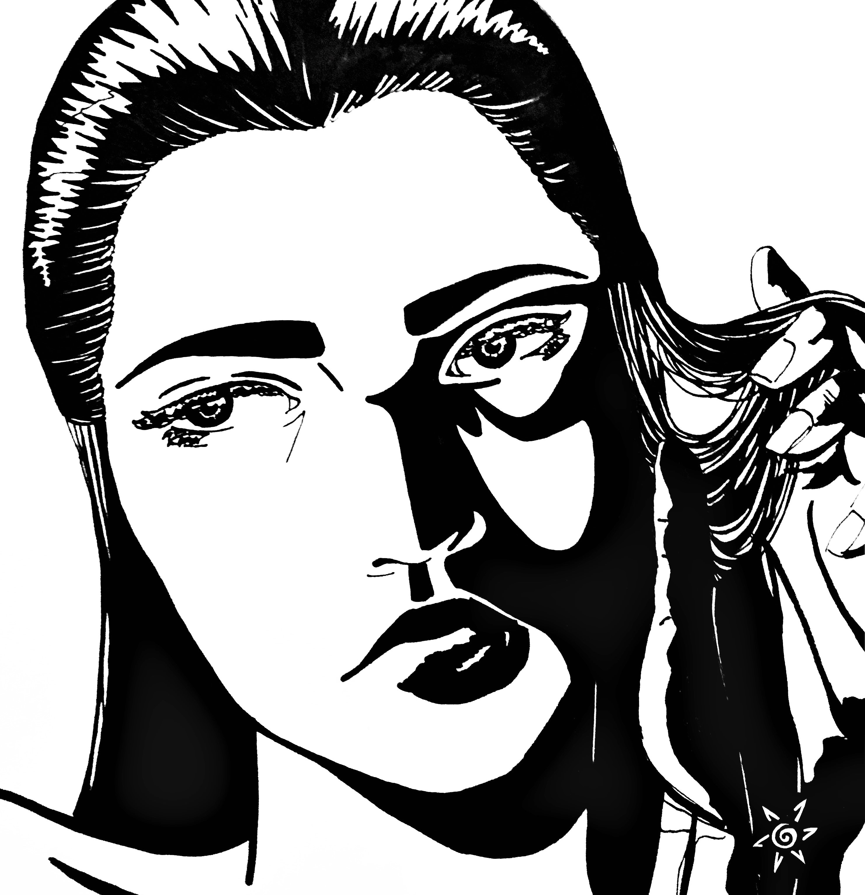

I enjoy listening to music because it makes life more colorful. I wanted experiment more with color by express the way music can enhance my emotions.
"Color of Music", Pen and Crayon Drawing, 2016
I enjoy listening to music because it makes life more colorful. I wanted experiment more with color by express the way music can enhance my emotions.

"Shadows", Pen Drawing, 2016
I wanted to experiment more with the deep contrasts and contours of the face. I used a ballpoint pen to get the basic shapes of the face.
Later, I went through with a sharpie to fill in the shadows.